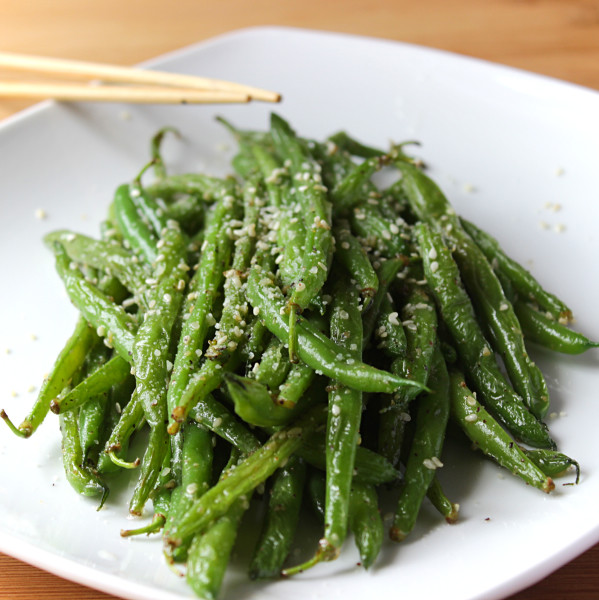

Garlic Parmesan Green Beans

Description
Crisp-tender green beans meet their golden hour. Sautéed in fragrant
garlic butter and finished with a shower of parmesan, these
beans are snappy, savory, and addictive. Ready in 15 minutes, this is the
side dish that steals the show.
Ingredients
- 1lb fresh green beans (stems removed)
- 2 tbsp unsalted butter
- 2 garlic cloves , minced
- 1/2 tsp salt
- 1/8 tsp ground black pepper
- 1 tbsp grated parmesan cheese
Directions
- Steam the green beans
- Add 2-3 inches of water into a deep steamer pot (or pot with a steamer attachment)
- Boil the water , once water is boiling add your green beans in a steamer basket to the pot
- Steam for 6-8 minutes , we are trying to get the green beans slightly tender , not fully cook them
- Once tender, remove from heat and set aside
- Melt butter over medium-high heat in a skillet
- Add Green beans and garlic and cook for 1 minute , tossing frequently
- Add salt and pepper, toss to coat green beans evenly
- Remove pan from heat and sprinkle grated parmesan, toss until parmesan is melted and evenly distributed
Home